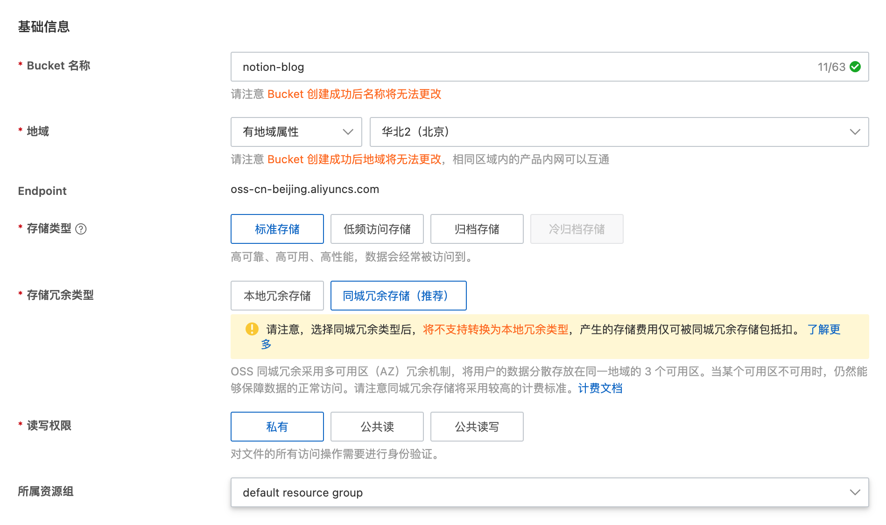
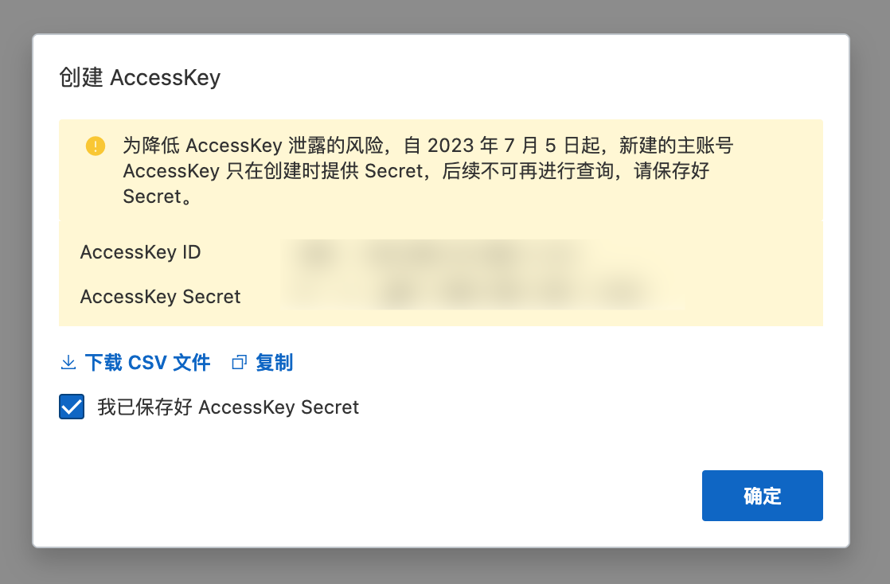

Alibaba Cloud OSS
Alibaba Cloud Object Storage Service (OSS) is a massive, secure, low-cost, and highly reliable cloud storage service that provides up to 99.995% service availability. It offers multiple storage types to choose from and fully optimizes storage costs. Visit the official website Alibaba Cloud OSS.
Tip
If you don't have Alibaba Cloud OSS service, you need to first purchase, and after creating, you need to enable the OSS service (seems redundant, I've already bought the resource package, shouldn't it be automatically enabled for me🤣). I purchased the OSS resource package, standard-local redundant storage, China mainland common, 40GB, for 6 months, costing 4.98 yuan (because I didn't buy the acceleration traffic package, the price for single storage is actually similar to Tencent Cloud).
Obtain (Create) Bucket and Region
Go to the Alibaba Cloud Object Storage OSS console and click on "Create Bucket." Then configure according to your needs:

Take note of the Bucket name and the region, as you will need them later.
Tip
Unlike Tencent Cloud, Alibaba Cloud's region codes need to be found by yourself and are not directly provided in the console. Here is a reference table. As shown in the image above, my Bucket name is notion-blog and the region is North China 2 (Beijing), corresponding to the code oss-cn-beijing.
Obtain AccessKey Id and AssessKey Secret
Go to the Alibaba Cloud AccessKey management page and click on "Continue to use AccessKey" (you can also use sub-accounts, but that's not covered here), then record the AccessKey Id and AccessKey Secret, as they will be needed later. Please ensure to securely store these.
